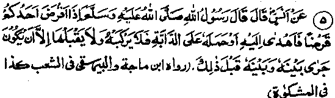
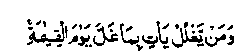
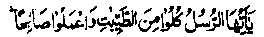
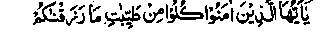
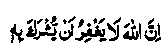

Chapter Six · Section (d): Ahadith on the foregoing subjects (concerning the excellence of Tawakkul)
Hadith 5

Anas Radhiallaho anho narrates that Rasulullah Sallallaho alaihe wasallam said, 'When one of you makes a loan to someone and the borrower sends him a present or provides him an animal to ride, he must neither ride the animal nor accept the gift, unless it is a practice they followed previously.’
Note: The Hadith means that, if they were previously accustomed to exchange gifts or borrow things from each other, there is no harm in accepting gifts, etc, from the borrower. But if they were not on such terms and the debtor is presenting things to the creditor simply because he owes him some money, he must not accept it for it amounts to usury. In another Hadith, Abu Burdah says that Abdullah Ibne Salaam Radhiallaho anho said to me,’ "You live in a land where usury is common, so when anyone owes you anything and presents you with a load of straw or a load of barley or a load of grass, do not accept it, for it is usury." So, before accepting a gift, the receiver should ascertain that the donor has no such evil intention in his mind; for example, if a debtor presents a gift to his creditor so that the latter should not demand payment of his debt, it (the gift) becomes bribe, besides being usury.
It has been narrated in a number of Ahadith that Rasulullah Sallallaho alaihe wasallam cursed the one who bribes and the one who accepts bribes. Abdullah Ibne Umar Radhiallaho anho narrates that Rasulullah Sallallaho alaihe wasallam invoked the curse of Allah Ta'ala on the one who bribes and the one who takes bribes. It has been narrated in another Hadith that the curse of Allah Ta'ala befalls the one who bribes and the one who takes bribes. It has been related in still another Hadith that the one who gives bribes and the one who accepts bribes will both go to Jahannam.
Another Hadith says, ‘A community among whose members usury is common are afflicted with famine; and a community whose members practice bribery is haunted by awe and fear of other people.’ There are many Ahadith stating that Rasulullah Sallallaho alaihe wasallam cursed the one who takes bribes, the one who bribes others and the one who acts as go-between regarding a bribe. Rasulullah Sallallaho alaihe wasallam sent a man to collect Sadaqah (Zakaat and voluntary Sadaqaat). He on his return said, "This part of the collection is Sadaqah and this was presented to me as a gift". On this Rasulullah Sallallaho alaihe wasallam admonished the people thus," I employ some people to collect Sadaqah and yet one of them comes and says, "This is Sadaqah and this is a gift which was presented to me’. Why did he not sit in his father’s or his mother’s house and see whether the gift would be given to him dr not (to the end of the Hadith)". (Mishkaat)
We have observed that, according to the foregoing Ahadith, a creditor can accept a gift from his debtor only if they have been previously accustomed to exchange presents. Similarly, the admonition contained in this Hadith implies that if a person, who is not a ruler (or a collector of Sadaqah), is presented with something while sitting at home (not holding any office), it is really a gift. On the other hand, if anyone receives something by virtue of his office as a ruler, it is not a gift.
Rasulullah Sallallaho alaihe wasallam is reported to have said: "If anyone intercedes for someone and that one gives him for it a present, which he accepts, he enters a big door among the doors of usury (i.e. becomes guilty of a serious type of usury)". (Mishkaat). Ma‘az Radhiallaho anho says: "Rasulullah Sallallaho alaihe wasallam sent me to Yemen, but when I set off he sent a person after me and I was brought back. Rasulullah Sallallaho alaihe wasallam then said, "Do you know why I sent after you? Do not take anything without my permission, for it is dishonest dealing”, and (says Allah Ta‘ala)":

"And he who acts dishonestly will come on the Day of Resurrection with the dishonest deeds (loaded on his back)". (Aale ‘Imran: 161)
Abu Hurairah Radhiallaho anho reported, "Rifa’ah Radhiallaho anho presented Rasulullah Sallallaho alaihe wasallam with a slave called Mid’am who accompanied him on the expedition to Khaiber. On one occasion, Mid’am was taking down the saddle of Rasulullah’s camel when a stray arrow struck him and he died. The people said, Congratulations to him! He died a martyr.’ (It was really an occasion for congratulations because he was a slave-boy of Rasulullah and he was blessed with martyrdom). But Rasulullah Sallallaho alaihe wasallam said, ‘Not at all! The blanket that he took dishonestly has become a fiery wrapping around him.’
Zaid bin Khalid Radhiallaho anho narrates: "One of the Companions of Rasulullah died at the battle of Hunain. When his funeral was ready, Rasulullah Sallallaho alaihe wasallam was requested to lead his funeral prayers, but he said, "Do it yourself. At this, they looked dejected. Rasulullah Sallallaho alaihe wasallam noticed their anxiety and said, Tour companion was dishonest (about booty in the path of Allah)". Zaid Radhiallaho anho said that they searched his belongings and found some Jewish beads not worth even two Dirhams."(Durr-e-Manthur). Rasulullah Sallallaho alaihe wasallam is reported to have said: "Allah is pure and accepts only what is good and pure, and He has given the same command to the Mo’mineen (believers) as He has given to His Rasul saying:

‘O Rasuls! Eat of what is good and pure and act righteously’, (al-Mu’minun: 51)
And He said to the believers:

”O you who believe! Eat of the good and pure things We have provided for you”. (al-Baqarah: 172)”
Then Rasulullah Sallallaho alaihe wasallam mentioned a man who makes a long journey (and the Du'aas or supplications of those who are making a journey are accepted) with his hair dishevelled and his body covered with dust (a state which speaks of his being very humble and poor), who stretches out his hands to Heaven, in supplication (Du'aas) saying, ‘O Allah!’, when his food, drink and clothing have come to him from unlawful (Haraam) sources and he has been nourished by what is unlawful (Haraam). He then asked how the supplications (Du'aas) of such d one could be accepted." In another Hadith, Rasulullah Sallallaho alaihe wasallam has been reported as saying: "A time will come when a person will not care whether what he gets has come to him from a lawful (Halaal) or an unlawful (Haraam) source". (Mishkaat)
In the books on Ahadith, there are many more Traditions on various subjects, which admonish people to be vigilant about the sources of their income, and advise them to beware lest they should be swayed by avarice, and choose not to notice the unlawful nature of their income. In this connection, the Ulama are especially required to keep vigilant and guard the sources of their income. Their responsibility is greater than that of common people because they can, by themselves, distinguish the lawful from that which is unlawful. Particular care should be taken, in these matters, by the Ulama who are responsible for running Madrasahs (free schools for imparting religious knowledge) or other such people who collect funds in the form of donations and contributions, etc.
Our spiritual leader and guide, Maulana Shah Abdur Rahim of Raipur, who was an illustrious descendant of the great personages of our spiritual line, used to say, "I feel more afraid (of having to make use) of the funds of these Madrasahs than of the money individually owned by someone". For, if anyone has been careless in handling money owned by an individual, he can ask that person to pardon him; (if he does so) the sin of misuse is expiated. But the funds of Madrasahs consist of donations and subscriptions of so many people; and those who manage their finances are trustees in charge of these funds. Therefore, if anyone makes an unlawful or dishonest use of these funds and the trustees pardon his guilt, the sin is not expiated. Rather, the trustees also become accomplices in the guilt, by the very act of pardoning him. May Allah, in His infinite Mercy and Compassion protect us from sinning against His Laws regarding the rights of His men! One has to be very cautious in these matters because of their gravity.
Rasulullah Sallallaho alaihe wasallam said: "On the Day of Judgment, there will be three courts. There is one in which forgiveness is out of question viz. the one for deciding matters relating to oneness of Allah Ta'ala and ascribing partners to Him. Says Allah Ta'ala Who is great and glorious.

Lo! Allah pardoneth not that partners should be ascribed unto Him. (an-Nisa: 116)
There is one court in which Allah Ta'ala will not leave without reckoning, till requital is made among the people viz. people’s wrong-doing to one another (i.e.inflicting physical and mental torture, like abusing, slandering people, casting aspersions on their character, etc., or usurping the property belonging to others). And then there is one for matters relating to the rights of Allah Ta'ala over His people. That is in the Hands of Allah Ta'ala: if He wishes, He will punish them, but if He wishes He will pardon. (Mishkaat)
I have quoted this Hadith to stress the point that one should be very cautious and strictly watch the sources of one’s income. For, if a person earns unlawful (Haraam) property, his supplications to Allah Ta'ala are not accepted (as mentioned above). Nor does Allah Ta'ala accept the Sadaqat (charities) taken out of unlawful money (as stated in numerous traditions quoted in the Chapter on Zakaat, in Part one of this book). What is more, we have quoted a few Ahadith to this effect: ‘Fire of Jahannam is more fitting for all flesh which has grown out of what is unlawful (Haraam)’. The same subject is further elucidated in the commentary on Hadith Six that follows. May Allah, in His bounteous mercy, protect us from devouring unlawful (Haraam) property Ameen!